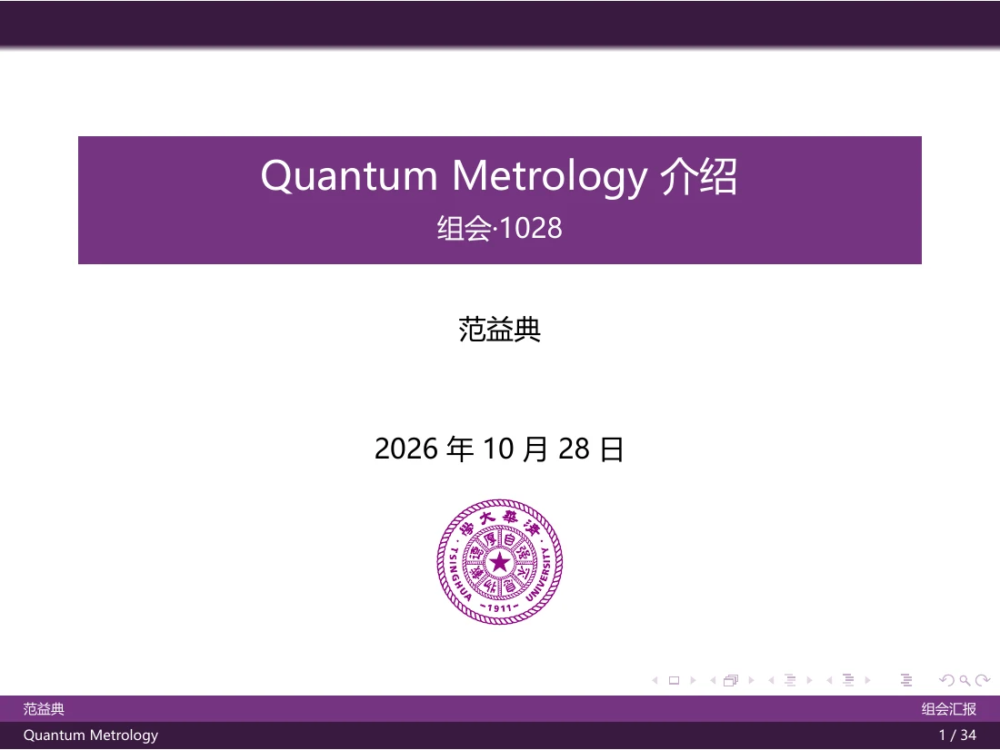
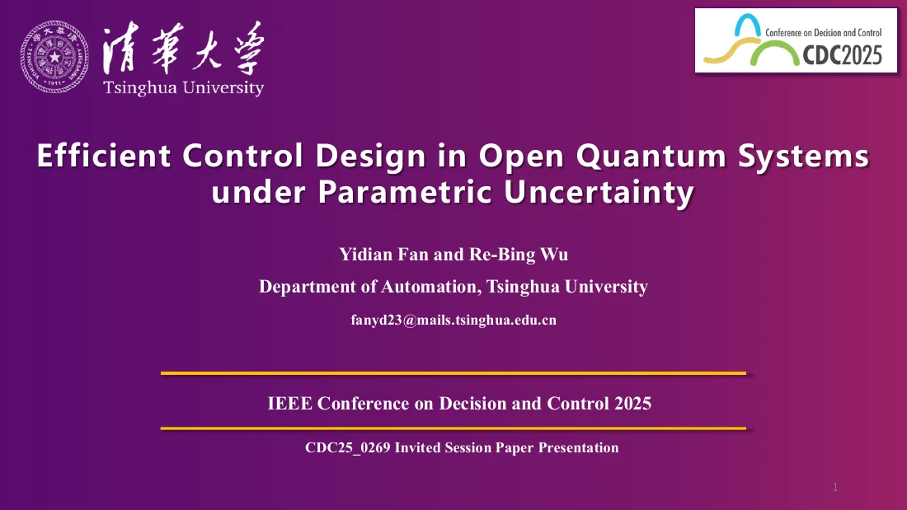

GROUP MEETING
Quantum Metrology
An introduction to parameter estimation and quantum precision limits, spin squeezing, and LIGO.
从参数估计与量子精度极限出发，介绍自旋压缩及 LIGO 引力波探测中的量子计量。
- Fisher information
- SQL & Heisenberg limit
- Spin squeezing
- LIGO
Slides from group meetings, research talks, and outreach presentations, listed newest first.
组会报告、学术分享与宣讲材料，按报告时间由新到旧排列。

GROUP MEETING
An introduction to parameter estimation and quantum precision limits, spin squeezing, and LIGO.
从参数估计与量子精度极限出发，介绍自旋压缩及 LIGO 引力波探测中的量子计量。

IEEE CDC 2025 · INVITED SESSION
Efficient robust control of open quantum systems under parametric uncertainty, using Suzuki-Trotter expansion to accelerate system-dynamics evaluation.
IEEE CDC 2025 分会场报告：通过 Suzuki-Trotter 展开加速系统动力学计算，提高参数不确定性下开放量子系统鲁棒控制的优化效率。